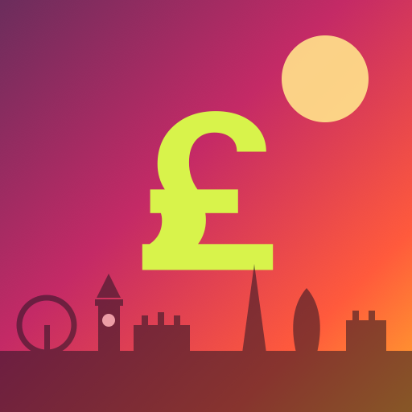

How much is left?
The whole bar is your monthly budget. The coloured part is what you already spent.
✎ Change your budget
Two kinds of change, one place. Did a cost change for good? Type the new amount and switch on Make this my new default at the bottom — every month from now on follows it. Just this one month? Leave that switch off and only changes. And a cost that does not come up at all this month goes off with its own switch; next month it is simply back.
The names below are only a starting point: tap the name of a cost to rename it, pick another colour or icon, or remove it — that stays possible later on, even after months of use. Your logged expenses keep hanging on to it.
Expenses you already logged stay exactly where they are; only the length of the bars changes.
Where your money comes from
Euro amounts are converted using your exchange rate. Every source has its own run time, so each month only counts what actually arrives.
All sources start at zero. Tap Edit income below and enter what you actually get each month — the whole dashboard follows from it.
Work varies per month
log individual jobs
£0.00
✎ Change your income
Two kinds of change, one place. Did your grant or savings change for good? Type the new amount and switch on Make this my new default at the bottom — every month from now on follows it. Just this one month? Leave that switch off and only changes. And a source that does not pay out at all this month goes off with its own switch.
Tap the name of a source to rename it, pick a colour, set a period or remove it. Renaming is fine at any time: your amounts stay attached to it. A period is handy for money that only runs for part of the year — outside those months the source simply does not count.
Work is the one you cannot type over here — that total comes from the jobs you log above, so it always matches what you actually got paid. Change the exchange rate in Settings and every euro amount is recalculated.
Settings
Change these and the whole dashboard follows.
Everything is saved on this phone only. Nothing is sent anywhere, so no account is needed — but clearing your browser data clears your budget too.

In Safari, tap Share and then Add to Home Screen. You get this icon, and the app opens full screen without the browser bar.
+ Add expense
0 expenses · £0.00 in total